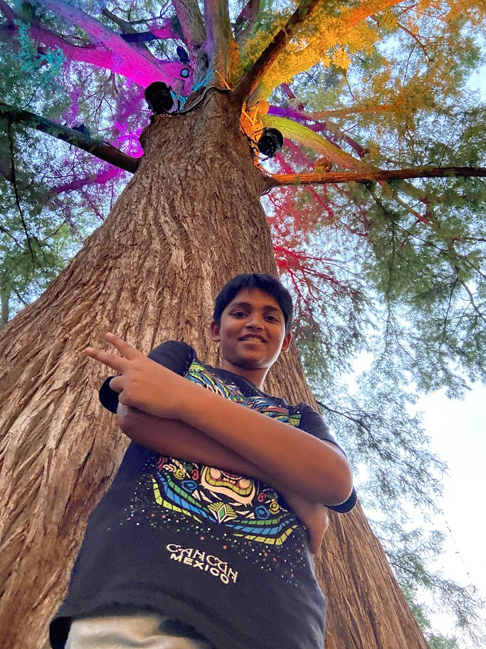

Our Certificate & Online Programs for 2023
Reaching academic milestones has shown how much I've put my brainpower and memory to work. The whole experience has been a deep dive into math and a wide range of subjects. By sticking to learning and working hard, I've covered a lot of ground, not just getting better at math, but also getting a broader and deeper understanding of everything.
What I've achieved in sports and physical activities is all about putting in a lot of hard work and sticking with it. I've dedicated myself to these pursuits, and it's been a real journey exploring what my body can do. It's not just about being strong or fast; it's about showing that I can keep at it, no matter what.
Achievements
Won a spelling bee in elementary school
Did Abacus for 6 years
Got a gold trophy from Kumon
Have played, Table Tennis, Tennis, Soccer, Swim, Badminton, and cricket
Know a lot about Python, JS, and HTML/CSS